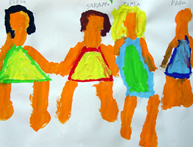

|

|
| Isftic. Uso educativo-nc. Procedencia. |
Cómo ya hemos visto, el crecimiento y el desarrollo son conceptos diferentes pero con algunas características comunes.
¿Cuáles son esas características?
-
El crecimiento y el desarrollo ocurren en direcciones regulares, que reflejan el desarrollo físico y la maduración de las funciones neuromusculares.
-
En todas las dimensiones del crecimiento y el desarrollo hay una secuencia definida y previsible. Es ordenada y continua, y cada niño y niña pasa por esta etapa. Ej. se arrastran antes de gatear, gatean antes de erguirse, etc.
-
Aunque hay un orden fijo y preciso en el proceso del desarrollo y crecimiento, éste no progresa al mismo ritmo en todas las personas.
El crecimiento y el desarrollo se producen en direcciones regulares. Pero, ¿en qué dirección se producen? Existen unas leyes que regulan el orden del desarrollo y el crecimiento:
-
Dirección céfalo-caudal: El extremo superior del organismo, se desarrolla antes y es de mayor complejidad que el extremo inferior. Así, por ejemplo, será anterior el desarrollo de los órganos de la cabeza que de los pies. Esto es especialmente evidente en el periodo prenatal.
-
Tendencia próximo-distal: El crecimiento y el desarrollo se producen desde el centro del organismo a la periferia, Por ejemplo, el desarrollo de los hombros será anterior a los de la muñeca.
-
Tendencia de lo general a lo específico: El desarrollo generalizado o global precede siempre al específico o especializado, es decir, desde las operaciones simples se avanza a operaciones más complejas y especializadas. Esto se observa de forma clara en el control de los movimientos, que va avanzando progresivamente hasta el dominio de la motricidad fina.